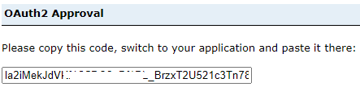

Exploiter GAE depuis AAW ou CAE;
Analyse multiplateforme
Qu'est-ce que AAW?
L'Espace de travail pour l'analyse avancée (AAW) fournit des outils d'analyse et d'intelligence artificielle open source de pointe ainsi qu'une capacité de calcul pour les charges de travail modernes de science des données.
L'AAW met l'accent sur les produits et services open source.
Qu'est-ce que CAE?
L'Environnement d'analyse collaborative (CAE) fournit des services cloud pour l'ingestion, la transformation et la préparation des données, ainsi que l'exploration et le calcul des données. Il comprend des outils d'analyse collaborative, des environnements d'apprentissage automatique et des capacités de visualisation des données.
Le CAE met l'accent sur les produits natifs du cloud Azure.
Prérequis
1) Un projet embarqué dans les deux espaces (AAW et/ou CAE, ET, GAE)
2) Un ID client ArcGIS Portal (clé API)
Connexion aux données spatiales - Portail d'entreprise GAE
Le portail ArcGIS Enterprise peut être accédé à partir de l'AAW ou du CAE en utilisant l'API, depuis n'importe quel service qui exploite le langage de programmation Python.
Par exemple, dans l'AAW et l'utilisation des Jupyter Notebook dans l'espace, ou dans le CAE l'utilisation de Databricks, DataFactory, etc.
Connexion au portail GAE à l'aide de l'API ArcGIS
-
Installer les packages :
ou en utilisant Artifactory
-
Importer les bibliothèques nécessaires dans le carnet de notes.
-
Accéder au portail Votre groupe de projet se verra attribuer un identifiant de client lors de l'intégration. Collez l'identifiant de client entre les guillemets
client_id='######'. -
- La sortie vous redirigera vers un portail de connexion.
- Utilisez l'option de connexion Azure de StatCan et votre ID Cloud.
- Après une connexion réussie, vous recevrez un code pour vous connecter à l'aide de SAML.
- Collez ce code dans la sortie.

Recherche de votre contenu
Méthode search() La méthode search() est utilisée pour récupérer une collection d'éléments correspondant à des critères de recherche spécifiques. Elle vous permet de rechercher des éléments en fonction de différents paramètres tels que des mots-clés, des types d'éléments, des propriétaires, des étiquettes, des groupes, et plus encore. La méthode search() renvoie une liste d'éléments correspondant aux critères de recherche spécifiés. Cette méthode est utile lorsque vous souhaitez récupérer plusieurs éléments répondant à certaines conditions.
Il existe plusieurs façons de rechercher du contenu en fonction de la quantité de métadonnées que vous avez renseignées pour votre élément. En savoir plus sur la méthode .search ici
Rechercher tous vos éléments dans le portail
Rechercher du contenu par nom
Iterate over the search results
for item in search_results: print(f"Title: {item.title}, ID: {item.id}") ```
Recherche de contenu par balise
Recherche de contenu par groupe
# Spécifier l'ID du groupe ou le nom du groupe dans lequel vous souhaitez effectuer la recherche
group_id = "votre_ID_de_groupe_ou_nom"
# Rechercher des éléments dans le groupe spécifié
search_results = gis.content.search(query="", inGroup=group_id)
# Parcourir les résultats de la recherche
for item in search_results:
print(f"Titre : {item.title}, ID : {item.id}")
Obtenir du contenu (récupération)
Méthode .get()
La méthode .get() est utilisée pour récupérer un élément spécifique en utilisant son identifiant unique. Vous fournissez l'identifiant de l'élément en tant qu'argument à la méthode .get(), et elle renvoie l'élément correspondant à cet identifiant particulier. Cette méthode est utile lorsque vous connaissez déjà l'identifiant exact de l'élément et que vous souhaitez récupérer cet élément spécifique.
La manière efficace de récupérer du contenu est d'utiliser l'identifiant de l'élément :
# Récupérer un élément spécifique en utilisant son identifiant
item_id = "votre_identifiant_d'élément"
item = gis.content.get(item_id)
Il est également possible de .get le contenu à partir d'une liste créée lors de la recherche (comme ci-dessus), cependant, cela peut devenir compliqué lors de l'exécution de plusieurs recherches, soyez donc prudent avec votre syntaxe.
Travail avec des données spatiales
Le choix entre ArcGIS et les outils open-source pour les données spatiales dépend de vos besoins spécifiques et des ressources disponibles. ArcGIS offre des fonctionnalités spécialisées et un support, tandis que les outils open-source sont gratuits et personnalisables. Tenez compte de vos exigences et de l'expertise disponible pour prendre une décision éclairée. Dans certains cas, une approche hybride peut être appropriée, où vous pouvez tirer parti des points forts d'ArcGIS et des outils open-source en fonction de la tâche à accomplir.
Convertir un service d'entités en DataFrame spatial avec des outils open-source
Conversion d'une couche d'entités ArcGIS en un DataFrame Pandas avec des capacités spatiales en utilisant la méthode pd.DataFrame.spatial.from_layer().
Convertir un service d'entités en GeoDataFrame avec des outils open-source
Conversion d'une couche d'entités ArcGIS en un DataFrame Pandas avec des capacités spatiales en utilisant la méthode pd.DataFrame.spatial.from_layer().
import geopandas as gpd
# Supposons que vous disposez de l'ID de l'élément du service d'entités
item_id = "votre_id_d'élément"
# Obtenir l'élément du service d'entités
item = gis.content.get(item_id)
# Accéder à la couche d'entités à l'intérieur du service d'entités
feature_layer = item.layers[0]
# Interroger la couche d'entités pour récupérer toutes les entités
features = feature_layer.query().features
# Convertir les entités en GeoDataFrame
gdf = gpd.GeoDataFrame.from_features(features)
Publier un Spatial DataFrame en tant que service d'entités sur le portail GAE
#sdf = votre spatial dataframe
item_properties = {'title': '<nom du titre>', 'tags': '<tag>', 'description': '<c'est la description de mon élément>'}
published_item = gis.content.import_data(sdf, item_properties=item_properties)
published_item.publish()
# Récupérer l'ID de l'élément et l'URL du service d'entités publié
item_id = published_item.id
feature_service_url = published_item.url
# Afficher l'ID de l'élément et l'URL
print("ID de l'élément:", item_id)
print("URL du service d'entités:", feature_service_url)
Visualisez vos données sur une carte interactive
Pour visualiser le widget de carte dans différents outils basés sur Python, vous devrez peut-être utiliser des fonctions d'affichage spécifiques à chaque outil ou des widgets. Par exemple, dans Databricks, utilisez la commande magique %python pour passer en mode Python avant de créer et d'afficher le widget de carte.
Module de carte ArcGIS
from IPython.display import display
# Récupérer l'élément de service d'entités
item = gis.content.get("id_de_votre_service_d'entités")
# Créer un widget de carte
map_widget = MapView()
# Ajouter la couche de service d'entités à la carte
map_widget.add_layer(item.layers[0])
# Afficher le widget de carte à l'aide de la fonction d'affichage spécifique à Databricks
display(map_widget)
Bibliothèque MatplotLib
Bibliothèque ipyleaflet
from ipyleaflet import Map, GeoData
# En supposant que vous disposez d'un GeoDataFrame appelé 'gdf'
# Créer une carte
m = Map(center=(gdf.geometry.centroid.y.mean(), gdf.geometry.centroid.x.mean()), zoom=10)
# Créer une couche GeoData à partir du GeoDataFrame
geo_data = GeoData(geo_dataframe=gdf)
# Ajouter la couche GeoData à la carte
m.add_layer(geo_data)
# Afficher la carte
m
En savoir plus sur l'API ArcGIS pour Python: Documentation complète de l'API ArcGIS
En savoir plus sur DAS AAW: Guide d'aide AAW
En savoir plus sur DAS CAE: Guide d'aide CAE